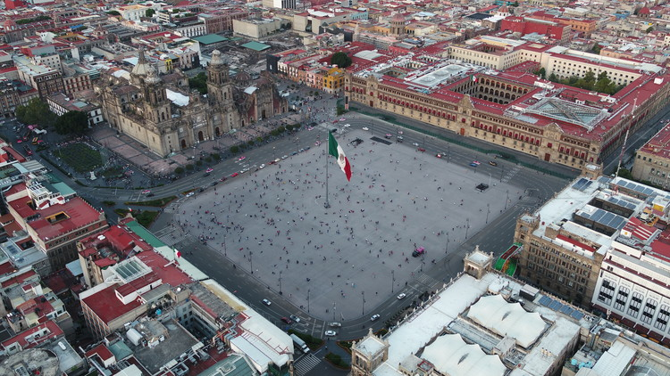

La Basílica de Guadalupe
La Antigua Basílica, construida en 1695, ha funcionado durante muchos años. Sin embargo y debido al hundimiento de sus cimientos, el arquitecto Pedro Ramírez Vázquez construyó la nueva Basílica que aquí se muestra. Cabe mencionar que es visitada por miles de peregrinos cada 12 de diciembre.
Xochimilco
Significa en náhuatl "El lugar de las flores". Las trajineras se han convertido en un atractivo que le ha dado fama internacional; mediante ellas se pueden visitar las chinampas donde se han cultivado y comercializado flores y verduras desde tiempos prehispánicos.
Recomendable visitar cerca de ahí el Museo Dolores Olmedo, donde podemos encontrar una colección de obras de nuestros queridos pintores Diego Rivera y Frida Kahlo.
Coyoacán
Significa en náhuatl "Lugar de coyotes". Este hermoso barrio fue conocido por que ahí se estableció temporalmente la capital del Virreinato de la Nueva España. Se pueden visitar ahí el Museo Frida Kahlo, la Casa León Trotsky y el Museo Nacional de Culturas Populares, en este último podemos encontrar el "árbol de la vida".
San Ángel
Ubicado al Sur de la CDMX, cada fin de semana se reúne una gran variedad de artistas plásticos, especialmente en el llamado "Bazar del Sábado". En este barrio se encuentra el Museo Casa Estudio Diego Rivera.
El Bosque de Chapultepec
El gran pulmón de la CDMX se divide en tres secciones llenas de museos, restaurantes y actividades culturales. Es un lugar para pasar un día de esparcimiento o para hacer ejercicio. El lugar histórico más importante fue el Castillo homónimo convertido en el Museo Nacional de Historia.


Zócalo Capitalino
El Zócalo es conocido por el Palacio Nacional (antes Palacio Virreinal), la Catedral Metropolitana, una obra muy importante desde la Colonia, y el Templo Mayor, el recinto más importante de la vida cultural y económica de los mexicas.
